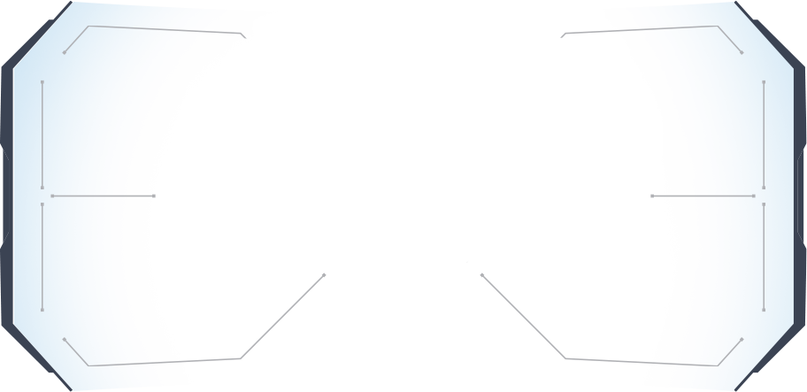

According to our research, almost 44% of digitally mature companies have a collaborative CIO-CMO relationship and it helps boost profitability.


The Key to Succeed in the race of Digital Transformation

COVID-19 created seismic shifts in consumer behavior and the way businesses operate, communicate, and collaborate. C-suite collaboration is needed now more than ever to accelerate digital transformation and deliver stakeholder value.

Infosys surveyed 970 business leaders & studied the dynamics of CMO-C-suite partnership.
Get insight from our report

According to our research,the roles of CMO & CIO have evolved.
According to our research,the roles of CMO & CIO have evolved.

According to our research, almost 44% of digitally mature companies have a collaborative CIO-CMO relationship and it helps boost profitability.
How about your risk miitigation strategy?

According to our research, CMO-CIO collaboration with the CFO enhances value, builds reputation, and mitigates financial risk to cash flow and profitability.
How about your growth strategy?
According to our research, collaborators in digitally mature companies leverage the digital ecosystem to empower employees, bring personalized digital experience and drive growth.
How can a strong
CMO & CIO partnership
has enterprises?
Our research found 4 key areas for collaboration - if Marketing and IT can see eye-to-eye on them
1
Elevate Human Experience
Marketing is more concerned than IT
about agility (69% vs. 46%) and evolving CX to HX (58% vs.35%)
Build the culture of
co-creation, listening, and learning
Connect brands with customers
via stories and experiences
Gap between Marketing-IT perception
Marketing Respondents
EvolvingCX to HX
Agility
Collaboration
Gap between Marketing-IT perception
IT Respondents
Talent or skills
A company culture to avoid this
Budgets
2
Devise the Right ESG Strategy
Marketing sees greater opportunity for ESG collaboration than does IT (50% vs. 38%)
CMOs can lead
in this area, working with CIOs and CFOs to better address
ESG criteria.
Gap between Marketing-IT perception
Marketing Respondents
Regular Marketing It Meeting
Environmental, Social, and Governance (ESG) Strategy
Gap between Marketing-IT perception
IT Respondents
Content personalization
Digital transformation accross the company
3
Foster Stakeholder Capitalism
The push for stakeholder capitalism is coming from
the top: 83% of senior executives agree or strongly
agree
that the pandemic was a tipping point for stakeholder capitalism.
3
Foster Stakeholder Capitalism
The push for stakeholder capitalism is coming from
the top: 83% of senior executives agree or strongly
agree
that the pandemic was a tipping point for stakeholder capitalism.
4
Resilience is more critical than ever before
CIO drives business
resilience through
technology
CMO drives brand
resilience and perception
management
Get access to the
detailed research report
on CIO-CMO collaboration including
Insightful data points revealing how digitally mature companies benefit through collaboration
How to move past the initial hurdles when it comes to collaboration
How to ensure resillience during the most unprecedented times`